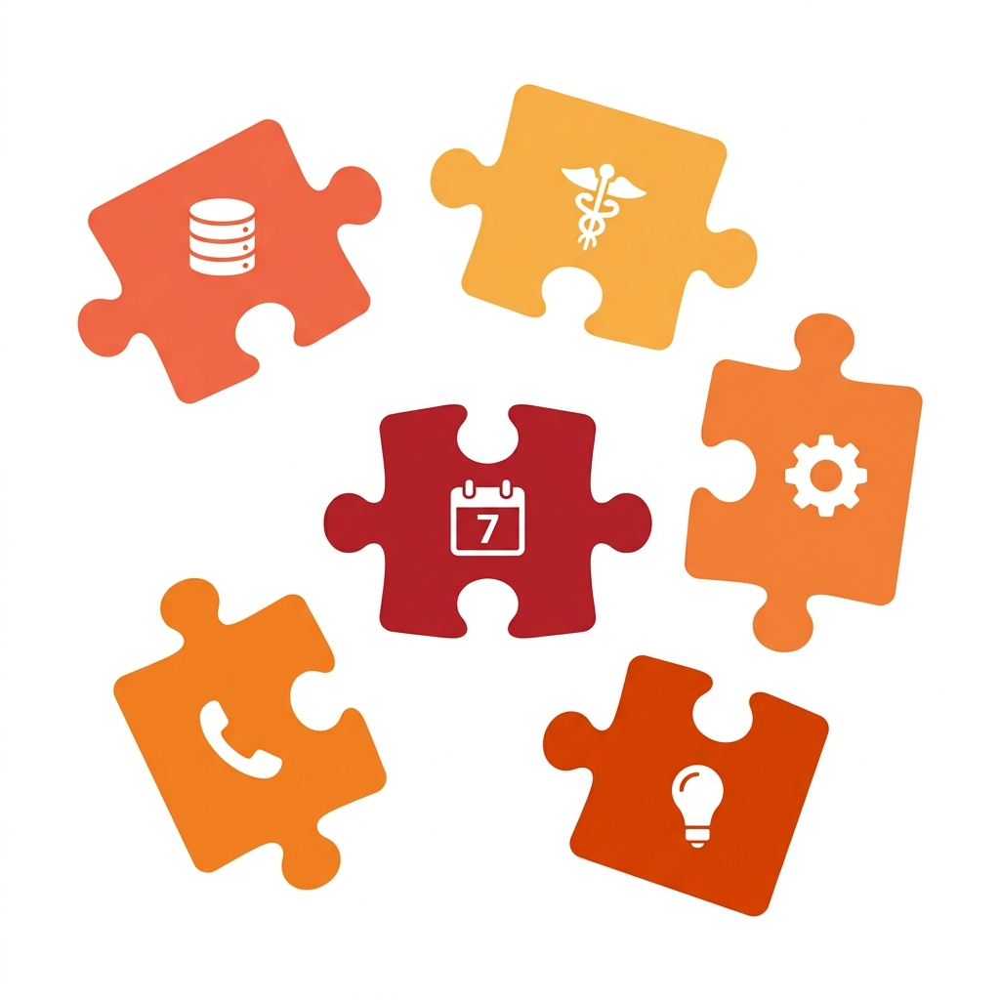
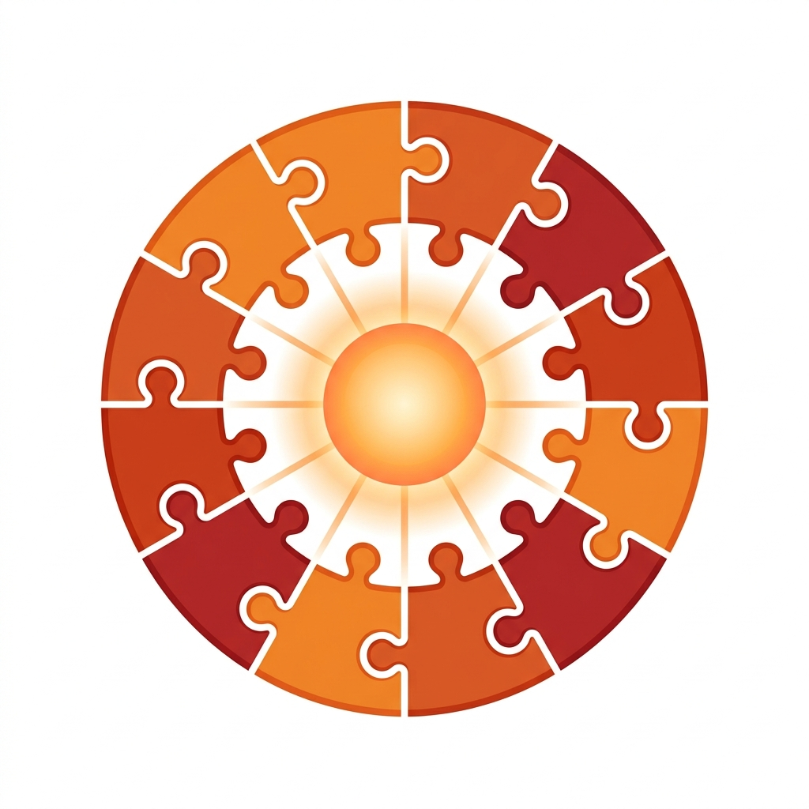

自動化が進むほど、IDの壁にぶつかる
コラム0〜3で、業務自動化・組織体制・AI信頼設計・ツール選定について書いてきた。
だが、どれだけシステムを作っても、ある段階で必ずぶつかる壁がある。「同じ患者さんなのに、システムごとにIDが違う」問題だ。

中小医療法人は平均5〜10個のシステムを使っている。電子カルテ、レセコン、訪問診療管理、訪問看護記録、AI業務プラットフォーム、勤怠管理…。それぞれが独自のID体系を持っていて、同じ患者さんが各システムで別の番号を持っている。
🔍 具体的にどんな問題が起きるか
| 場面 | ID統合なしの場合 |
|---|
| FAXの自動仕分け | AIが患者名を読み取っても、カルテのIDがわからない → 手動で検索して紐付け |
| 書類の自動作成 | カルテの患者と訪問診療管理の患者を照合できない → 自動化が途中で止まる |
| 問い合わせ対応 | 「この患者はどの拠点の担当？」に即答できない → 確認に時間がかかる |
| データ分析 | 患者数のカウントすら、システムごとに数字が違う |
個別の自動化は「その場しのぎ」でなんとかなる。だが、システム同士を連携させようとした瞬間、IDの壁が立ちはだかる。これが医療DXの「最後の壁」だ。
解決策 — ID統合ハブを作る

答えはシンプルだ。「おひさまID」という統一番号を作り、全システムのIDを紐付けるハブ（データベース）を構築する。各システムを変更する必要はない。ハブが翻訳してくれる。
電子カルテID: K-12345
↘
🏠 おひさまID: OH-0001（統合ハブが変換テーブルを保持）
↙ ↓ ↘
訪問診療管理ID: F-789 ／ 訪看記録ID: N-456 ／ AI-PF ID: T-321
この設計のポイントは、既存のシステムを一切変更しないこと。各システムは今まで通りのIDで動く。ハブが「カルテのK-12345 = 訪問管理のF-789 = おひさまID OH-0001」というマッピングを持っているだけだ。
📊 マッピングの規模感
おひさま会の場合：7つのシステム × 約9,800人の患者。単純計算で約68,600本のID紐付けが必要。これを1件ずつ手動で登録するのは現実的ではない。既存データからの自動マッチング（氏名＋生年月日で照合）と、新規患者の登録フローを組み合わせて構築する。
ID統合で何が変わるか
| 場面 | 統合前 | 統合後 |
|---|
| FAX自動仕分け | 患者名からカルテIDを手動検索 | おひさまID経由で瞬時に特定 |
| 書類自動作成 | カルテと訪問管理の照合が手動 | 自動で全システムの情報を収集 |
| 新患登録 | 各システムに1件ずつ登録 | ハブに1回登録 → 全システムに反映 |
| 担当医の確認 | 「この患者どこのクリニック？」を毎回調べる | おひさまIDで即検索 |
ID統合は「見えないインフラ」だ。道路がなければ車は走れない。ID統合がなければ、自動化システム同士が連携できない。
ID統合を進めるための3つの原則
✅ ID統合の設計原則
- 既存システムを変えない — ハブ側でマッピングを持つ。各ベンダーのシステムには手を加えない
- 100%を目指さない — まず主要システム3つ（カルテ・訪問管理・AI-PF）から始め、段階的に広げる
- 新規患者の登録フローから整備する — 過去データの照合は後回し。まず「今日以降の新患」が自動マッピングされる仕組みを作る
最大の落とし穴：「完璧なIDマスターを先に作ってから自動化しよう」と考えると、永遠に始められない。ID統合と業務自動化は並行して進めるのが正解。コラム0で紹介した3ステップと同時進行で、少しずつIDの紐付けを増やしていく。
シリーズまとめ — 医療DXの全体像
5回にわたるコラムで伝えたかったことを、1枚にまとめる。
Step 0：自動化すべき3つの業務を見極めるFAX電子化 → 問い合わせAI → 書類自動作成
▼
Step 1：DX推進の体制を整える経営トップの理解 × 専任担当 × AIツール
▼
Step 2：AIの信頼設計を徹底する事務員AIと医療AIを分ける。承認パイプライン
▼
Step 3：全員が使えるツールを基盤にするGWS + Go + Gemini APIの構成
▼
Step 4：ID統合で全システムをつなぐすべての自動化の「最後のピース」
DXの目的は、効率化ではない。「患者さんに向き合う時間を取り戻す」ことだ。テクノロジーはそのための手段にすぎない。だからこそ、正しい順序で、正しい設計で進めることが大切だ。